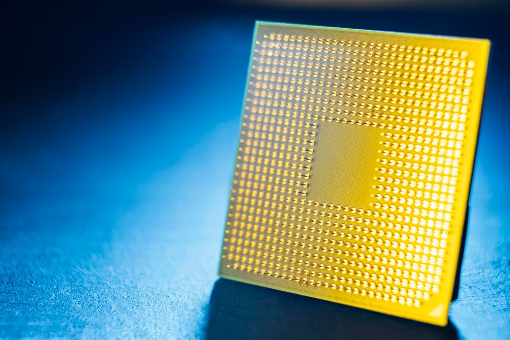

.jpg)
Processador
O processador é o cérebro do computador, executando instruções e manipulando dados para realizar operações.
Cache
A memória cache acelera o acesso do sistema ao armazenar dados frequentemente usados pelo processador.

Nucleo
O núcleo é a unidade principal de processamento em um processador, executando instruções de forma autônoma.
registradores
Os registradores são áreas de armazenamento na CPU que retêm dados temporários para acesso rápido.
Monitor
O monitor é o dispositivo de saída visual que exibe imagens e informações geradas pelo computador.

Memoria ram
A memória RAM armazena dados temporários para acesso rápido, melhorando o desempenho do computador.
Placa mãe
A placa-mãe conecta todos os componentes do computador, permitindo a comunicação entre eles.
Disco rigido
O disco rígido armazena dados permanentemente, incluindo o sistema operacional, aplicativos e arquivos do usuário.

GPU
A GPU processa gráficos e imagens, aliviando a carga da CPU e melhorando o desempenho visual.
Teclado
O teclado é um dispositivo de entrada que permite ao usuário inserir dados e comandos no computador através da digitação.
Pipeline
O pipeline é uma técnica de execução de instruções em etapas, permitindo processamento eficiente e rápido.

Barramento
O barramento é um sistema de comunicação essencial que transfere dados entre os componentes do computador.
Mouse
O mouse é um dispositivo de entrada usado para controlar o cursor e realizar operações no computador.
Impressora
A impressora é um dispositivo de saída que produz cópias físicas de documentos, imagens ou outros conteúdos digitais.

instruções
As instruções são comandos que dirigem o computador, indicando as tarefas a serem realizadas.